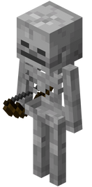
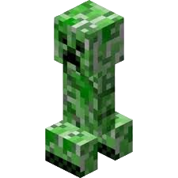
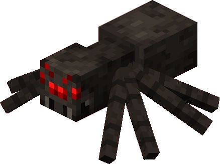
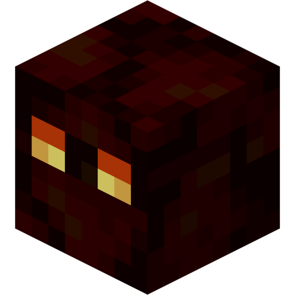
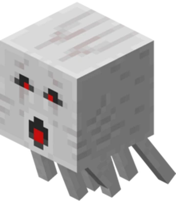
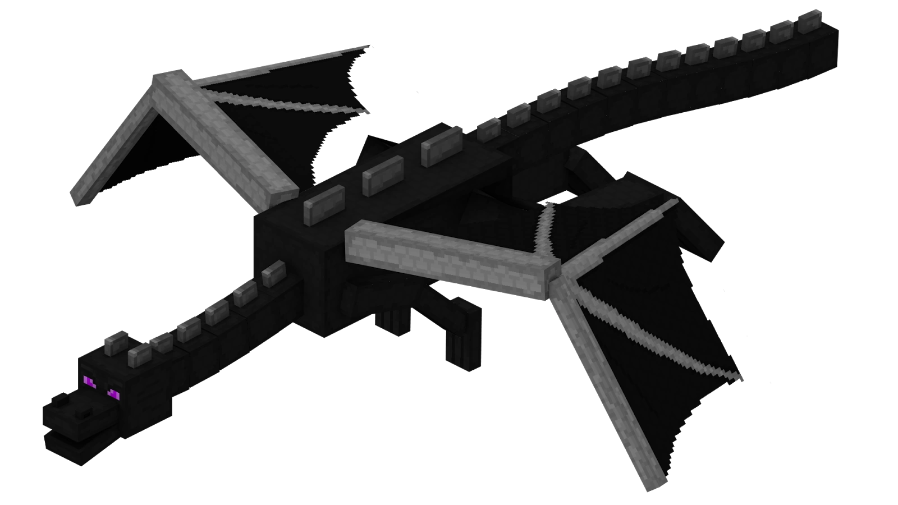
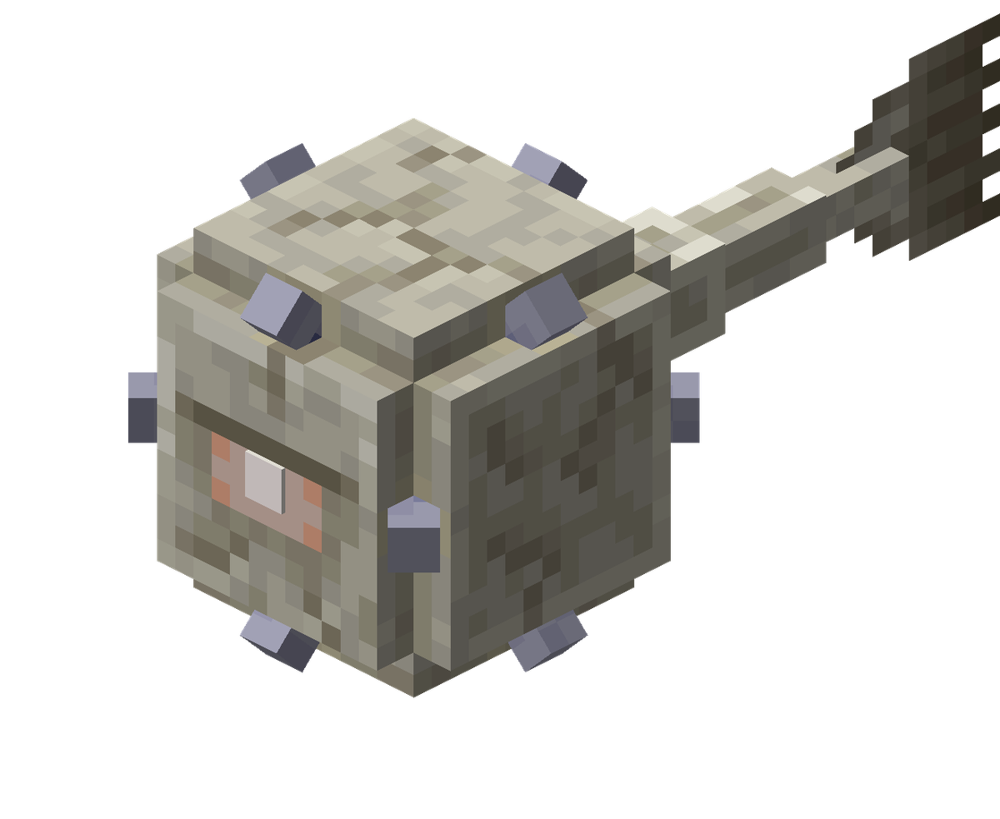

Список враждебных мобов
-
Зомби

Медленно двигаются и атакуют игрока вблизи. Легко убиваемы, но могут привести к большому количеству врагов.
-
Скелет
Стреляет из лука на расстоянии, достаточно опасен на больших расстояниях.
-
Крипер
Взрывается при близком контакте с игроком, огромный вред при взрыве.
-
Паук
Моб, который может карабкаться по стенам и нападает на игрока ночью.
-
Магма-Куб
Быстро двигается и атакует огнем, можно встретить в аду.
-
Гаст
Летает в аду и стреляет огненной шары, может повредить игрока на большом расстоянии.
-
Дракон Края
Главный босс игры, победить его — одна из главных целей.
-
Древний страж
Сильно защищает храм, атакует с помощью магии и очень прочный.